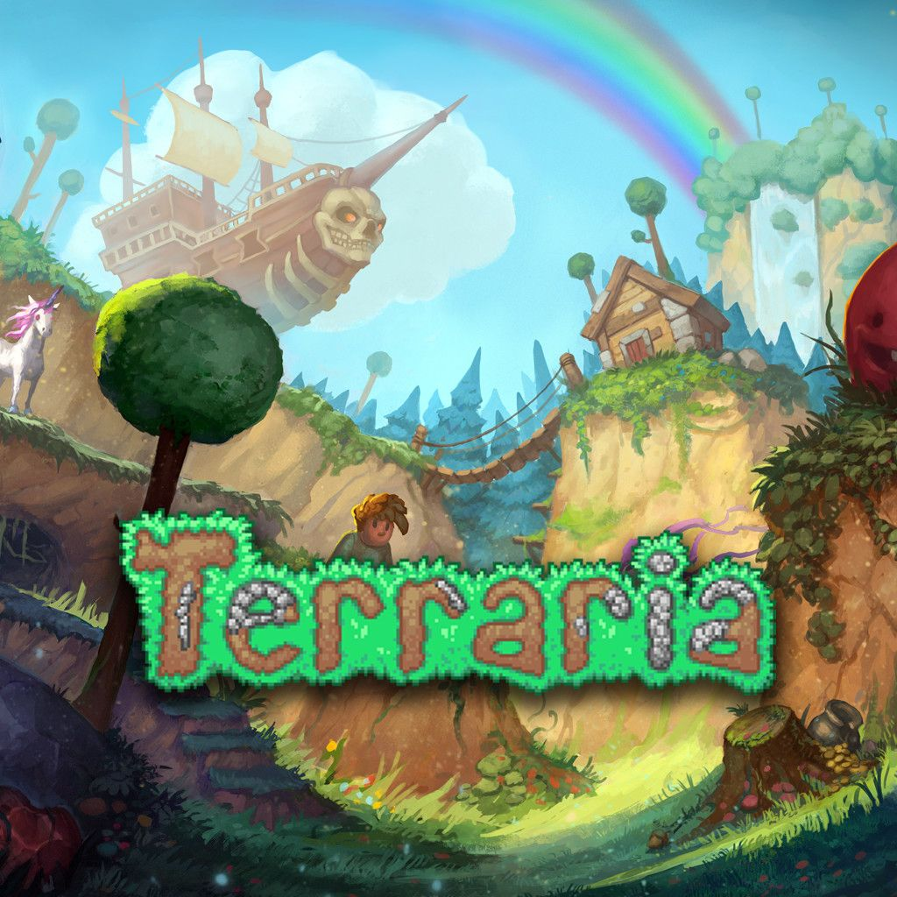

Terraria es un videojuego de aventuras, construcción y exploración en 2D lanzado el 16 de mayo de 2011. Los jugadores entran en un mundo generado de forma aleatoria donde pueden picar, excavar, construir, luchar contra enemigos y jefes, y progresar hacia dificultades mayores. Con su estilo retro-pixel y libertad creativa, Terraria se convirtió en un referente del género sandbox.
El estudio independiente Re-Logic, fundado por Andrew "Redigit" Spinks, desarrolló Terraria originalmente usando el framework Microsoft XNA. Con un equipo que surgió de la comunidad, Re-Logic ha mantenido el juego actualizado durante años, fortaleciendo su comunidad y extendiendo su contenido mucho más allá de los lanzamientos típicos.
Aunque en algún momento se anunció que la actualización 1.4 “Journeys End” sería la última, Re-Logic ha seguido trabajando en el juego y planea la versión 1.4.5 como un “último” empujón al desarrollo. Entre las novedades planeadas se encuentran mejoras de calidad de vida, nuevas opciones de personalización de personajes y colaboraciones con otros juegos. Esto demuestra que Terraria sigue activo y evolucionando incluso tras más de una década.